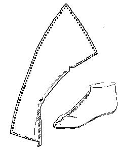
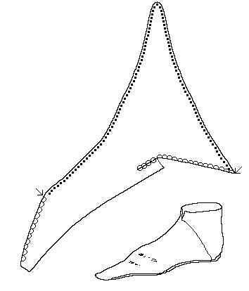

A
BAbove are two examples of simple slipper, based on Shoes
and Pattens. "A" is based on figures 7 & 85 [BIG 82
[4383]<5855> Period VII.11 c1150. The upper of "A" is either sheep
or goat, and it has a binding stitch around the upper edge, and has an embroidered vamp.
It is an "Adults' shoe". "B" is based on figures 6 & 84 [SH 74
[513]<635> Waterfront I c1140. The upper of "B" is either
sheep or goat. It is an "Adults' ankle shoe".
The shoe can be made from embroidered cloth, � la Aelfric,
Norris, and Wilson, or
colored leather, cloth, silk, or embroidered with bands of gold. The shoe can be
embroidered or tooled in squares, lozenges, or circles, often revealing a cruciform
pattern. This can also be decorated with real jewels, or with gold leaf.
The line along the center of the vamp in the sketch above is meant as decoration, not as a center seam, although some sort of center fastening or lacing is entirely possible. This is intended to be a fairly simple side seam turnshoe. Versions of this shoe based in the early portion of era should not be made with a rand. The basic design is MY estimate of the pattern, and may not be absolutely accurate.
Footwear of the Middle Ages - Historical Shoe Designs/Number 15, by I. Marc
Carlson. Copyright 1996,1999
This page is given for the free exchange of information, provided the Author's Name is
included in all future revisions, and no money change hands, other than as expressed in
the Copyright Page.